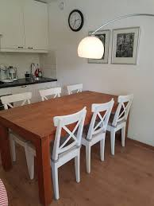

Herzlich wilkommen. Wonung fur 4 perzonen in Domburg. Nahe das Zentrum, Strand zu Fuß erreichbar. Wohnung für kinder geeignet.
Wohnung
Dit appartement op de begane grond van een kleinschalig appartementengebouw.
Het is smaakvol en met liefde ingericht en voorzien van alle gemakken.
Een gezellige woonkamer met een comfortabele zithoek voor 4 personen.
De keuken is uitgebreid en voorzien van alles dat nodig is voor een
comfortabele vakantie, de eethoek is ruim en biedt voldoende plaats voor
de hele familie.
Het appartement beschikt over 2 slaapkamers, waarvan 1 met
een tweepersoons bed en 1 met een stapelbed. Onder het stapelbed nog een onderschuifbed,
voor een eventueel extra kind. De badkamer is voorzien van
een minibad, een wastafel en toilet. Tevens treft u een wasmachine aan.
Er is een terras met zitbank met uitzicht op de gezamenlijke tuin, waar uw kinderen rustig kunnen spelen.
Parkeerplaats op eigen grond (let op, parkeerplaatsen zijn genummerd).
Het appartement is in een niet roken uitvoering en er zijn geen huisdieren toegestaan.
Domburg und Umgebung
Domburg is een klein dorp met een gemoedelijke sfeer. Ondanks de omvang
is er een grote verscheidenheid aan restaurants, cafes en winkels.
Voor vis kun je terecht bij vishandel Brassem en voor een ijsje bij de IJsvogel
of bij 't Begin. Er zijn ook pizzerias, een Mexicaan en een pannenkoekenhuis.
Het strand is op 10 minuten loopafstand. Ook in de omgeving is er genoeg te doen.
Als je van fietsen houdt: Middelburg is op 30 minuten en Vlissingen op 1 uur fietsafstand.
Lokation
Preize
Sommer
- 2 personen: €150
- 3 personen: €175
Herfst
- 2 personen: €100
- 3 personen: €120